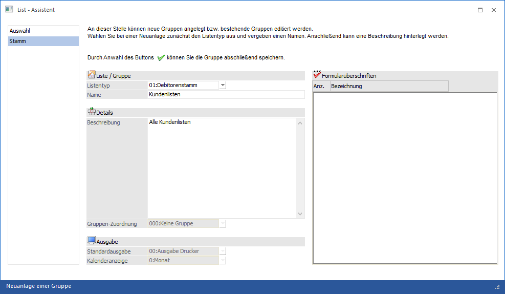

Gruppen dienen dazu, um mehrere Listen, die innerhalb eines Datentyps (Debitorenstamm, Statistik etc.) besser gliedern zu können und die Auswahl von bestehenden Listen zu vereinfachen.
Damit eine neue Gruppe erstellt werden kann, muss zuerst der Button "Neue Gruppe" angewählt werden bzw. über die rechte Maustaste die Option "Neue Gruppe" gewählt werden, wobei vorher der Listentyp ausgewählt werden muss, in dem die Gruppe angelegt werden soll.

Nach Anwahl des Buttons "Neue Gruppe" wird in ein Fenster gewechselt, das in zwei Bereiche geteilt ist. Im rechten Bereich sind die Schritte ersichtlich, die ausgewählt werden können, wobei bei der Gruppenanlage nur zwei Auswahlen zur Verfügung stehen:
ü Auswahl
Wenn man auf diesen
Bereich zurückwechselt, steht man wieder im ersten Fenster des "List -
Assistenten", in welchem man den Listentyp auswählen kann und von wo aus
entschieden werden kann, welche Aktion ausgeführt werden soll.
ü Stamm
In diesem Bereich können
die Einstellungen für die List-Gruppe definiert werden.
Im Bereich Stamm können folgende Felder bearbeitet werden
Ø Listentyp
Aus der Auswahlliste kann der Datenbereich ausgewählt werden, für den eine Listengruppe erzeugt werden soll. Dabei stehen folgende Datenbereiche zur Verfügung:
ü 00 - Kontenstamm (Sachkonten)
ü 01 - Debitorenstamm (Kunden)
ü 02 - Kreditorenstamm (Lieferanten)
ü 03 - Fakturen O.P. (Offene Posten ohne (Teil)Zahlungen bzw. Vorauszahlungen)
ü 04 - Artikeldatei (Artikelstamm)
ü 05 - Jahresjournal (Buchungsjournal)
ü 06 - Statistik (Verkaufsstatistik)
ü 07 - BKZ-Stamm
ü 08 - Anbu Stamm
ü 09 - Arbeitnehmerstamm (Arbeitnehmer- und Mitarbeiterstamm)
ü 10 - Kostenjournal
ü 13 - Interessenten (Kundeninteressenten)
ü 14 - Anfragelieferanten
ü 15 - Kostenstamm (Kostenstellen, Kostenarten und Kostenträger)
ü 16 - CRM Workflows
ü 17 - CRM Aktionen
ü 18 - CRM Workflows und Aktionen
ü 19 - Belegzeilen
ü 20 - Adressbuch (Auswertung über alle Adressen; Personenkonten, Kontakte, AN, Vertreter, zusammengefasst in einer View, wo nur die Felder angedruckt werden können, die in allen Datensätzen vorhanden sind)
ü 21 - Projekte
ü 22 - Kampagnen/Merklisten
ü 23 - Adressen (Auswertung über Personenkonten und Kontakte)
ü 24 - Produktion
ü 25 - Projekterfassung
ü 26 - PDMS
ü 27 - Zeitauswertung
ü 28 - Belege
ü 29 - Datenquellen
Hinweis 1
Beim Typ "20 - Adressbuch" können alle Adressen ausgewertet werden. Über den List-Typ "23 - Adressen" können Kontakte und die Ansprechpartner der Personenkonten auf Basis der Kontaktetabelle ausgewertet werden.
Hinweis 2
Wenn der List - Assistent in der Applikation WinLine INFO aufgerufen wird, dann stehen nur die folgenden Datenbereiche zur Verfügung:
ü 16 - CRM Fälle
ü 17 - CRM Aktionen
ü 18 - CRM Workflows und Aktionen
Ø Name
Hier wird der Name der Gruppe eingetragen, unter der die Gruppe in weiterer Folge gespeichert werden soll.
Ø Beschreibung
Zur Gruppe kann auch noch eine Beschreibung eingetragen werden. Diese Beschreibung wird in weiterer Folge im mittleren Bereich beim entsprechenden Listentyp angezeigt und dort können dann beliebige Listen zugeordnet werden.